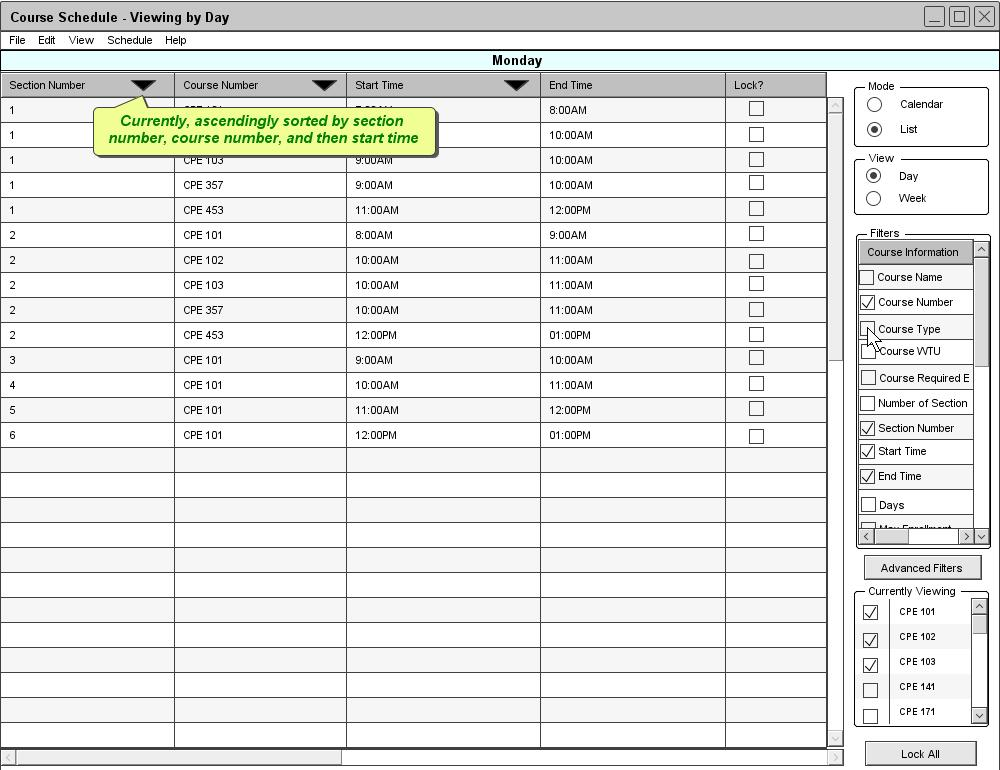
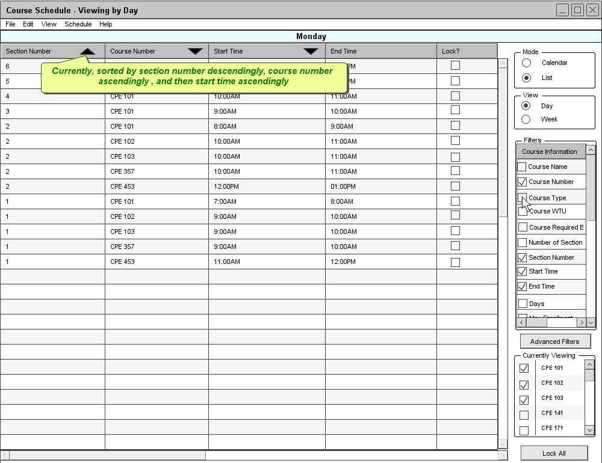

Figure 85: Switching the Sorting Order
Figure 70 is an example of a schedule in the list mode. When viewing it the list mode, the Scheduler Tool sorts a schedule by a certain default sorting order. Table 3 shows the default sorting orders for each different view type. By default every field is sorted in the ascending order
| Daily | Weekly | |
| Course View |
|
|
| Location View |
|
|
| Instructor View |
|
|
Table 3: Default Sorting Orders
Under the list mode, users can sort the schedule by any fields and rearrange the sorting order by drag and drop columns. To change the sorting order, the user clicks on the title of the column they want to rearrange and release the mouse click at the position they want to place that column. See figure 85. The orange line in figure 85 appears to help the user position the column.
Figure 85: Switching the Sorting Order
Figure 86 is the result after rearranging the sorting order. The schedule view in figure 86 is ascendingly sorted by section number, course number, and then start time.

Figure 86: Different Sorting Order
By clicking the title of any column, the user automatically switches the sorting order of the list. For example, if the column is currently sorted in ascending order, the order switches to descending order or vice versa when clicks the title. Figure 87 is the result after the user clicks on the Section Number column title in figure 86. The schedule view in figure 87 is descendingly sorted by section number and ascendingly by course number and then start time.

Figure 87: Descending Sorting View